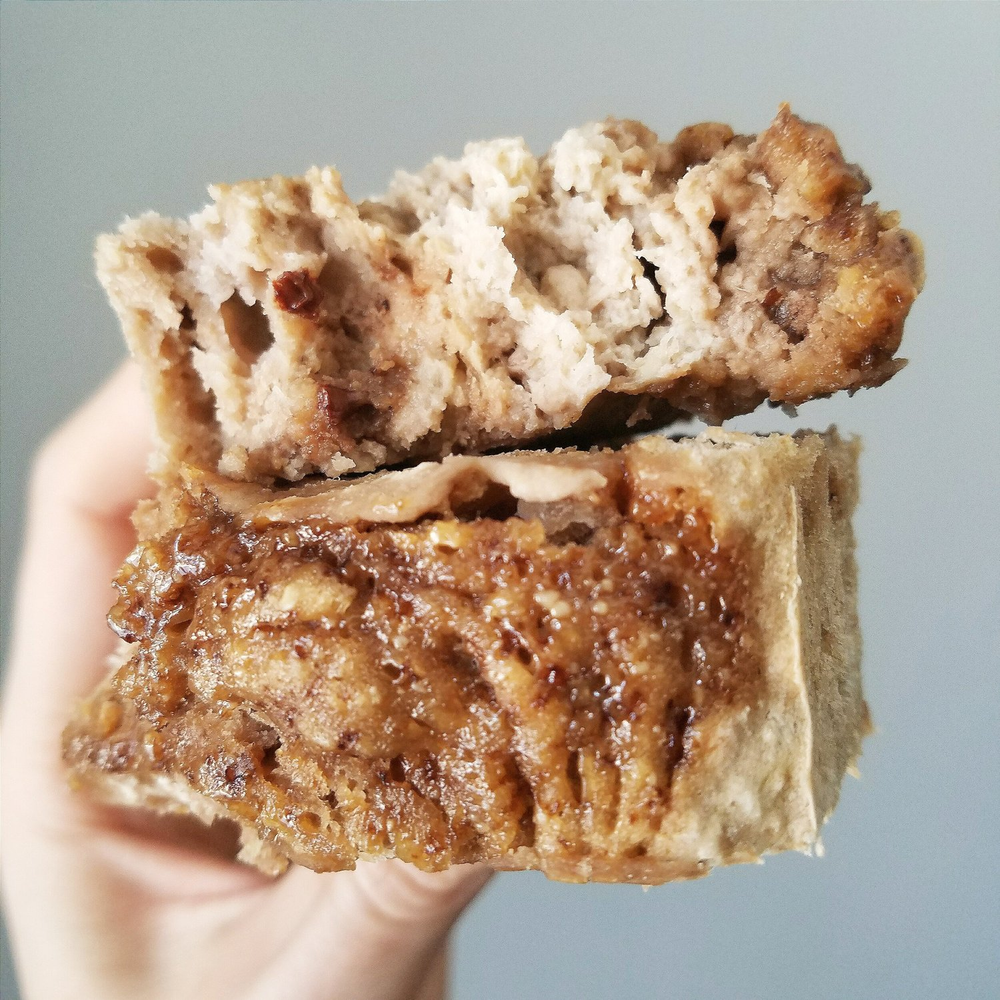
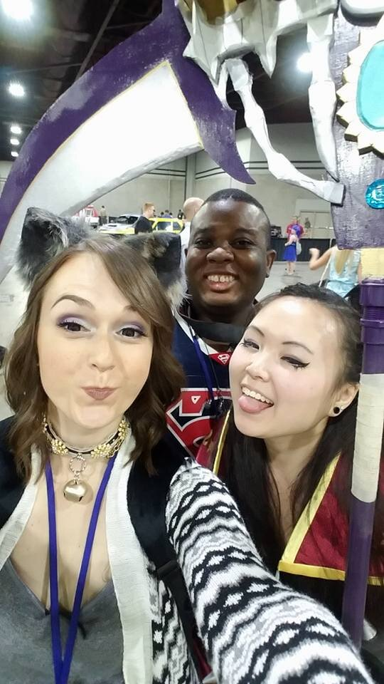
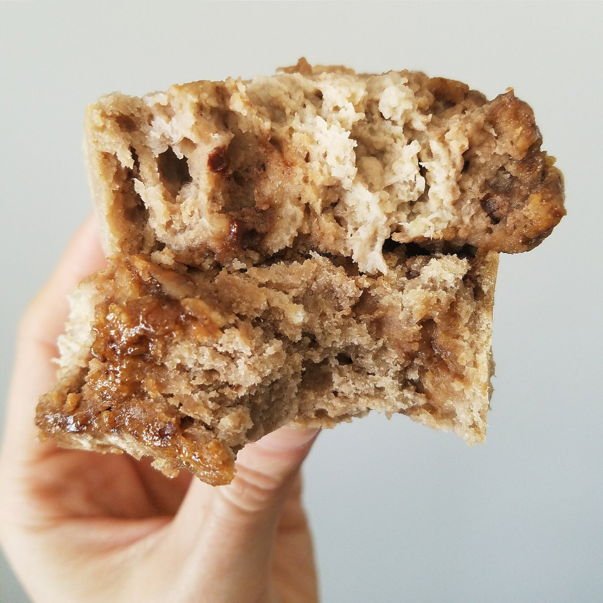
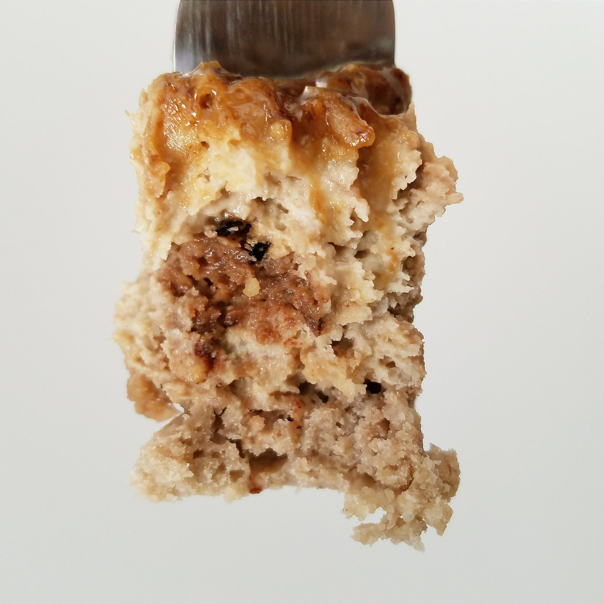

Espresso Caramel Swirl Banana Bread (vegan, gluten free)




I've got this espresso caramel swirl banana bread all to myself. You read that right; this luscious banana bread is perfectly sweet and moist with bursts of bold flavor that make you melt. Even more unbelievably, this healthy recipe is completely vegan, gluten free, and refined sugar free (but believe it!).
My world is very delicious right now. But my world is also very BUSY! I was at MomoCon all weekend, and now the real life has hit me. What is MomoCon, you ask? Wellllll... A fun convention for all things video games, comics, board games, anime, animation, and general nerdiness. It's basically a giant weekend-long party for inner nerds. I looooove it. There's always so many people to meet. When you go for years to cons, you definitely form a con family that you almost exclusively just see at cons XD so I rushed around all weekend to make sure I got to see everyone. :3 I think I did! Plus meeting tons of awesome new people!!
There were a ton of really cool things I saw. For one, the arcade room was so fun to watch people! A lot of super skilled people just use wizardry, I swear. There's this game similar to Dance Dance Revolution...but four people can play on two pads at once?!? It was insane... Here's a short clip I took but this wasn't even the hard part...I also went to an interesting panel called "working with Disney" and people shared their stories and answered questions. The voice of Pocahontas (Irene Bedard) was there, the voice of Belle (Paige O'Hara), Jim Cummings, and some illustrators. They had the coolest stories as well as some that made me cry. Another cool panel was an interactive game where the celebrity guests played along with us in the audience because we could vote on our phones. It was soo funny. The voice of Stephen Universe was there (Zach Callison) and he was funny XD My friend got to interview him and he said he's so nice it's scary...like unrealistically nice. But I also had a similar experience from meeting an illustrator and voice actor named C Martin Croker! He worked on a bunch of adult swim shows like Aqua Teen Hunger Force, but he is best known for voicing Zorak and Moltar on Space Ghost Coast to Coast. Just really refreshing to know everyone is really nice and not arrogant or bored with being at the con.
Of course seeing cosplays are a very exciting part of the con. I went to a contest and just...was so blown away. I think...what got me most excited all weekend was a group of girls titled "Eveellutions" for the evolutions in Pokémon. The picture doesn't do them justice; the outfits were all so elegant and the fabric was fantastic. Overall such a great concept. And I know Halo cosplays are done so so often (with a lot of people failing..bad...) but the red cosplay was great. His presentation was so funny and, it's hard to see, but those are RAINBOW lights that cycled through it! Mindblown - I felt like a moth to a light.
Unfortunately, I was so excited all weekend I forgot to take many pictures. :( I sowwy. But just know that means a ton of fun was had hahah. At night, the con actually closed (unlike AWA and other cons) but the courtyard was perfect for gathering to play music and dance and party. I didn't go to the rave (which I heard was fantassstic) buuuttt there were more than enough places to party. I really don't know how I didn't die when I stayed up until 5 am... I can't even remember the last time I was up until 2 am. I'm old. But that just shows you how serious cons are to me hahaha.
AnyWHOOO.. Thank goodness for the timing of the holiday this Monday because I got time to catch up on work, life errands, and just remember the real world before going back to work today. I ended up using the holiday to work all day on blog stuff and things I've been slacking on. I even got time to BAKE!! Correct me if I'm wrong, but I think this is the first actual baking recipe involving an oven that I've used in my new apartment. What a way to start it off because WOW. This espresso caramel swirl banana bread is absolutely killer.
I actually messed up the recipe a little bit from what I had planned. I'm gonna blame the tired-ness. But I think it turned out even better this way. It's so moist, yet very filling and satisfying. I wasn't sure how the bold espresso flavors would turn out in such a sweet recipe, but it is perfect.
Not too much, not too little. I'm just gonna toot my own horn here. *toot toot*Do yourself a favor and make this espresso caramel swirl banana bread!! It is completely vegan, gluten free, and refined sugar free (banana sweetening powah)! It does contain 2 TBSP of brown rice syrup, but you can choose to use IMO fiber syrup or sugar free maple syrup if you desire.
When you try it, just know that I warned you to sit down before you melt from deliciousness.
Espresso Caramel Swirl Banana Bread
Makes: 10 slices
Batter
-
3 medium bananas, very ripe and mashed
-
1.5 cups raw oats, ground into a flour
-
1.5 cups buckwheat flour
-
1/2 TBSP baking powder
-
1/4 cup baking stevia (Optional)
-
¾ cup unsweetened almond milk
-
1 dark chocolate espresso crunch Raw Rev Glo Bar
Espresso Caramel Swirl
-
1 TBSP cashew butter (or other nut butter)
-
2 TBSP brown rice syrup
-
1 tsp espresso powder dissolved in ½ tsp water
Mash your bananas into a large mixing bowl. Then add the remaining ingredients (except for the espresso raw rev glo bar) and mix evenly. Cut the bar into small pieces, then incorporate it into the batter.
Make the espresso caramel swirl by mixing the three ingredients. Spray a bread loaf pan with nonstick spray. Pour half of the batter in. Then pour on half of the caramel, swirling it gently with a knife. Top with the remaining loaf batter, then the remaining espresso caramel. Swirl the caramel once more.
Bake at 350 F for 45-50 minutes.
Let cool 15 minutes, then cut into 10 slices. Enjoy!